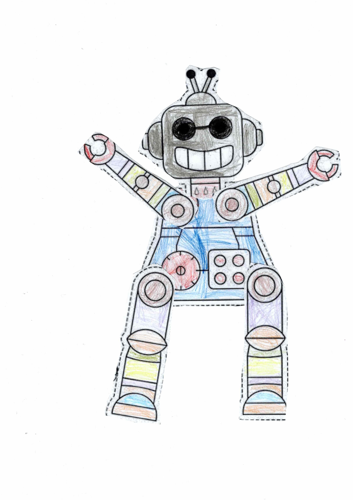
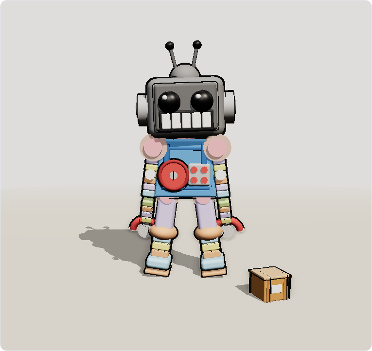
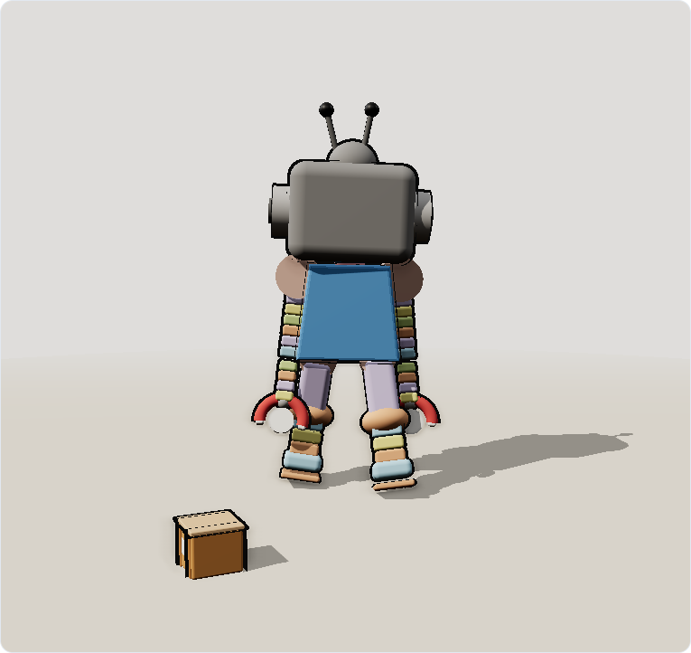
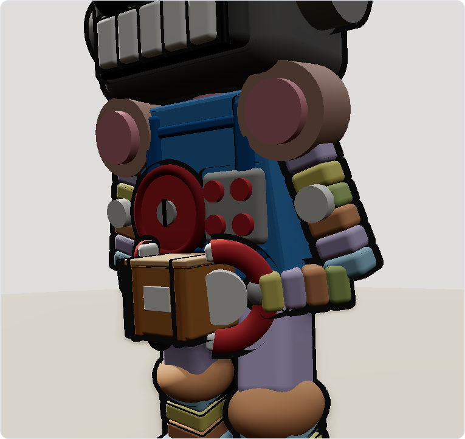

Movimento
- W A S D / frecce
- Cammina
- Shift
- Corri
- Gamepad
- Stick sinistro e d-pad
- Trascina
- Orbita la camera
Esperimento Three.js · Geometria procedurale
Il robot del foglio è ricostruito pezzo per pezzo con primitive 3D: nessuna mesh importata, nessuna texture. Si muove nella scena, cammina, ride e sa afferrare la scatola di cartone.
La spalla
Quattro passaggi, ogniuno verificato nel browser: il disegno, la geometria, il rig animato e infine il gioco con controller, scatola e regia cinematografica.

Testa a televisore, antenne a sfera, braccia aperte a V con pinze a “C”, torso blu con quadrante rosso e pannello a quattro pulsanti, cosce lavanda e tibie a bande. Ogni elemento del foglio è diventato una specifica di costruzione.

RoundedBoxGeometry per cranio e arti, cilindri per giunti e collo,
sfere per occhi e ginocchi, un TorusGeometry ad arco per la pinza “C”
e un’ExtrudeGeometry per il profilo trapezoidale del torso. I
contorni sono una seconda passata di mesh con side: BackSide.

Dieci stati (idle, walk, laugh, wave, approach, reach, grab, lift, carry, place) pilotati da una macchina a stati a passo fisso a 60 Hz. Le braccia usano l’IK analitica a due ossa per afferrare la scatola, il busto si inclina per raggiungere il terra.

Tastiera, touch e gamepad alimentano lo stesso controller; la camera segue il robot e, in modalità Cinema, cambia inquadratura in base allo stato (primo piano per la risata, campo basso per la scatola). Il tutto gira a 60 fps senza asset esterni.
Controller